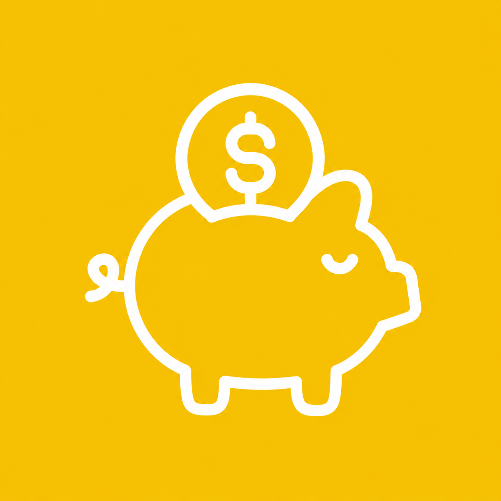

FinanceNewsUm mês para falar sobre a vida — e para lembrar que pedir ajuda é um ato de coragem.
O Setembro Amarelo é a campanha nacional de prevenção ao suicídio. A data de referência, 10 de setembro, é o Dia Mundial de Prevenção ao Suicídio, criado em 2003 pela IASP (Associação Internacional para Prevenção do Suicídio) em parceria com a Organização Mundial da Saúde (OMS).
No Brasil, a campanha começou em 2015, por iniciativa do CVV (Centro de Valorização da Vida) junto com a Associação Brasileira de Psiquiatria (ABP) e o Conselho Federal de Medicina (CFM). A cor amarela foi escolhida em referência a um laço amarelo usado em homenagem a um jovem americano que tirou a própria vida em 1994 — símbolo que depois se espalhou como representação da causa.
Falar sobre o assunto salva vidas. Quanto mais natural for buscar ajuda e conversar sobre o que se sente, menor a distância entre alguém em sofrimento e o apoio que essa pessoa precisa.
Falar sobre se sentir um peso para os outros, sem esperança ou sem saída.
Afastamento repentino de amigos, família e atividades que antes davam prazer.
Alterações bruscas no sono, apetite, humor ou energia.
Doar pertences, "resolver pendências" ou se despedir de forma incomum.
Deixe a pessoa falar. Você não precisa ter todas as respostas — só precisa estar presente.
Perguntar sobre o assunto não planta a ideia — ao contrário, mostra que você se importa e abre espaço pra conversa.
Psicólogos, psiquiatras e serviços de saúde são parte essencial do cuidado. Ofereça-se para ajudar a encontrar esse apoio.
Se o risco parecer iminente, procure ajuda imediata — não é algo para lidar sozinho.
Apoio emocional gratuito, sigiloso e disponível 24 horas por dia, todos os dias.
Em caso de emergência ou risco imediato, procure também o SAMU (192) ou o pronto-socorro mais próximo.
Centros de Atenção Psicossocial: atendimento público e gratuito pelo SUS, voltado a saúde mental.
Unidades Básicas de Saúde também acolhem e encaminham casos de sofrimento psíquico.
Atendimento particular ou pelo plano de saúde, incluindo opções de terapia online.
🎗️ Use amarelo em 10 de setembro, o Dia Mundial de Prevenção ao Suicídio.
📢 Compartilhe informações confiáveis sobre saúde mental nas suas redes.
👂 Esteja disponível para ouvir amigos e familiares, sem pressa e sem julgamento.
🧠 Trate a saúde mental com a mesma importância que a saúde física.